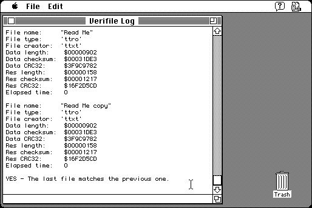

Download
verifile-13-fat.zip (70K) Verifile FAT 1.3 repackaged into a zipped hfs disk image and checksum file. The disk image can be mounted with Mini vMac.
verifile-13-fat.hqx (94K) Verifile FAT 1.3 in the original format.
copyright: Alessandro Levi Montalcini
mod date: Nov 28, 1996
license: Freeware
last known url
(gone)
Can “calculate the checksum and CRC32 of any file”. Requires System 7.

If you find these downloads useful, please consider helping the Gryphel Project, which hosts them.
Here are the md5 checksums for the downloads, signed with Gryphel Key 5:
--------- GRY SIGNED TEXT --------- cfa7310c1bf701b3fe12150e0eda3441 verifile-13-fat.zip 3eb43862c0c3a4b0d116148c3fae5142 verifile-13-fat.hqx ------- BEGIN GRY SIGNATURE ------- Gry/4Xa8CFcUzxdN/EgM57yDLfrGohkhBYBQCo+4zgSQfkt6TtOnjHRH/0UN+Tx1 OvCd5CHhaXmee73alawfEXSDsZlcSdyG1rlkOjlQFPij7UjNS1YArR64ibYXkRoc Z8iN5NXdcspjLypcdnO+ERKwEj/CImUd2Hgc1FFn9IsgTvVurs+gl9XHsj4iOu8g -------- END GRY SIGNATURE --------